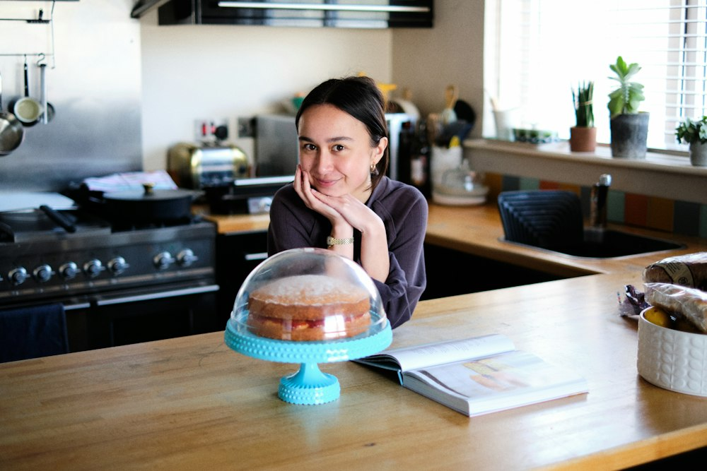
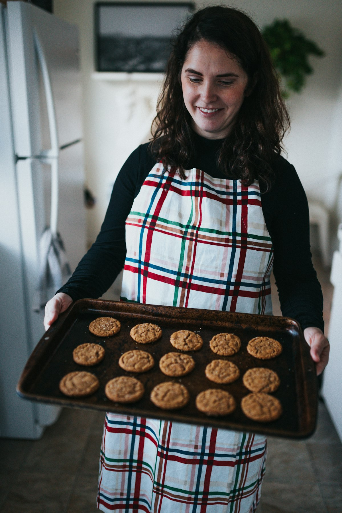
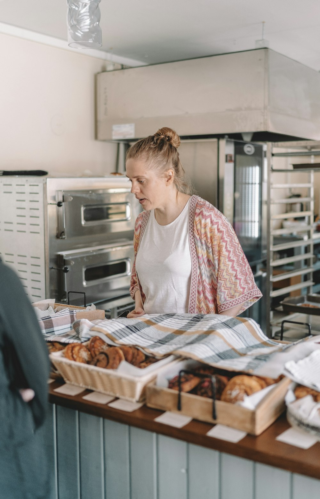
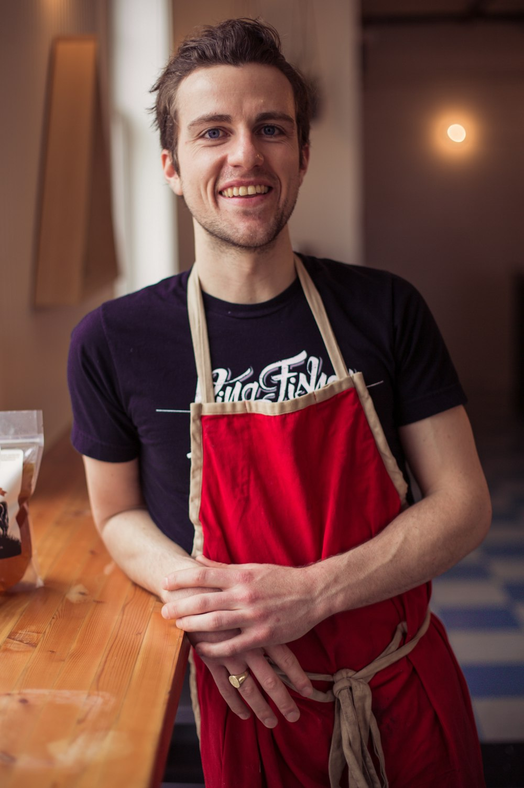
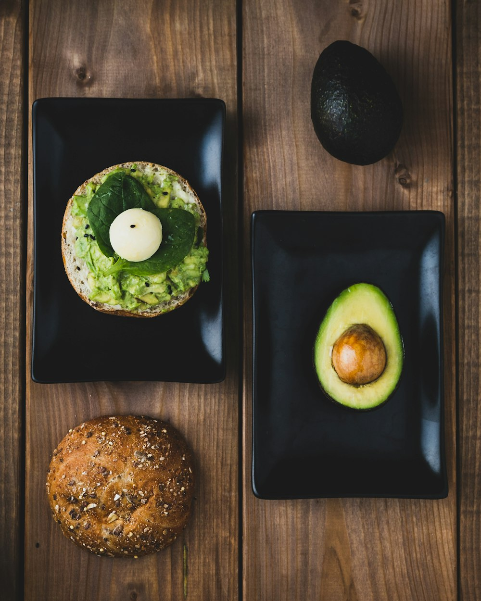

Sherry
Founder · Avocado Lover
Started swapping butter for avocado ten years ago, and her family never noticed.
Hello, lovely!
Avocado banana bread, soft rice flour loaves and gluten-free treats. Real ingredients, simple steps, and no guilt.

fresh from our oven
the faces behind the flour

Founder · Avocado Lover
Started swapping butter for avocado ten years ago, and her family never noticed.

Bread Lead · Gluten-Free Queen
Proves that rice flour bread can be soft, fluffy and perfect for sandwiches.

Pastry · Sweet Without the Sugar Crash
Dates, bananas and dark chocolate are his secret weapons.

little swaps, big difference
Swap 1:1. It's lower in saturated fat, higher in fiber, and gives an extra-moist crumb.
A mild, nutty base for gluten-free breads. Mix it with tapioca starch for a light texture.
The secret to gluten-free bread that holds together and slices beautifully.
Ripe bananas, dates and applesauce let you cut sugar in half.